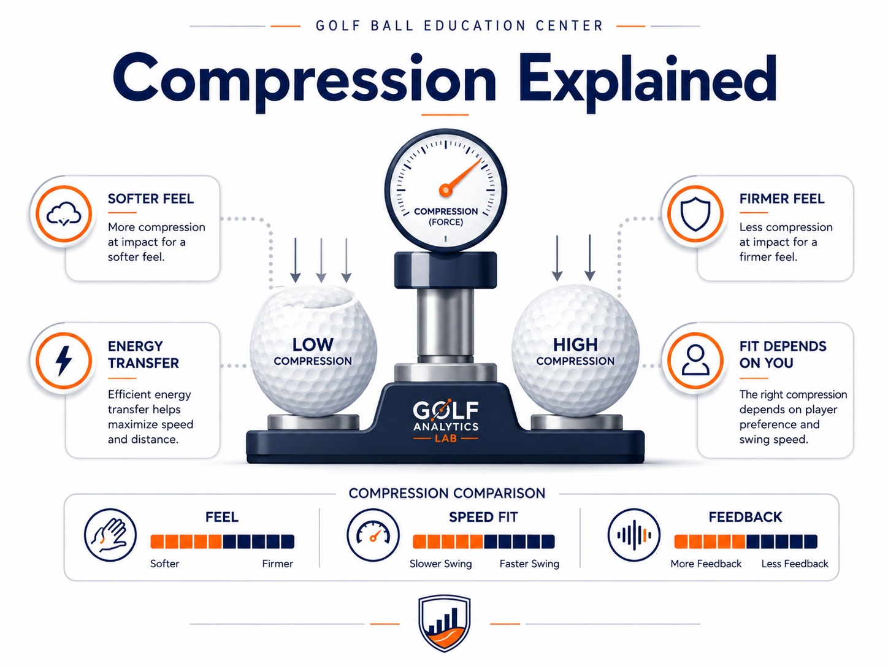

By Golf Analytics Lab
Walk into any golf shop today and you'll hear golfers discussing golf ball compression.
"I need a low-compression ball."
"That ball is 100 compression."
"My swing speed isn't high enough for that ball."
Compression has become one of the most talked-about specifications in golf. Yet surprisingly few golfers know what the number actually means—or where it came from.
Even more surprising, it isn't measured in pounds per square inch (PSI), and it has nothing to do with the amount of air inside the golf ball.
The story begins nearly a century ago with an engineer named Raphael J. Atti, whose invention changed the way golf balls are measured forever.

Before Compression Ratings, "Soft" and "Hard" Were Just Opinions
During the early 1900s, golf ball manufacturers were producing wound rubber golf balls with increasingly sophisticated designs. Golf professionals and amateur players could certainly feel differences between one ball and another, but there was no common language for describing those differences.
One golfer might describe a ball as soft while another called the same ball firm. Manufacturers needed something more scientific than opinions.
They needed a standard.
Enter Raphael Atti
Raphael J. Atti wasn't trying to invent a better golf ball.
He wanted to invent a better way to measure one.
Working through Atti Engineering, he designed precision testing equipment that could apply a consistent force to every golf ball and measure how much it deformed under that load. His testing machines became the foundation for what would eventually be known throughout the golf industry as the Atti Compression Scale.
Can We Isolate Compression?
Follow the traditional PGA-style compression equation, work two ball examples, and review Golf Analytics Lab’s conclusions about what the number can—and cannot—tell us.
What Does a Compression Number Actually Measure?
A compression number is not air pressure, PSI, or internal pressure. It measures how much a golf ball resists being squeezed. Softer balls deform more under a standard load, while firmer balls deform less.
Why Isn't Compression Measured in PSI?
PSI measures pressure. Compression measures deflection. Modern golf balls are solid, so compression is simply an indication of firmness.
Typical Compression Ranges
30–50: Very soft 50–70: Soft 70–85: Medium 85–100: Firm 100+: Very firm
Why Compression Mattered More Fifty Years Ago
Compression ratings were originally developed for wound balata golf balls. Today's multilayer balls use solid polybutadiene cores, mantle layers, and urethane or ionomer covers, making compression only one part of overall performance.
Why Two "80 Compression" Balls May Feel Different
Manufacturers use different testing methods and design philosophies. Construction, cover material, aerodynamics, and core chemistry all influence performance.
The Biggest Myth
Matching compression directly to swing speed is an oversimplification. Modern golf balls are engineered to perform across a wide range of swing speeds.
Golf Analytics Lab's Four C's
Compression – Firmness Construction – Internal design Cover – Feel, spin, durability Cost – Overall value
Final Thoughts
Raphael Atti's work gave golf manufacturers a scientific way to compare golf ball firmness. Nearly a century later, compression remains useful, but it is only one part of understanding golf ball performance. At Golf Analytics Lab, we believe golfers should evaluate every ball using the Four C's: Compression, Construction, Cover, and Cost.